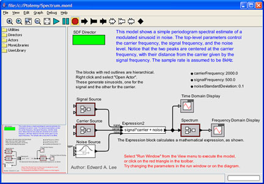

Ptolemy II--Heterogeneous Concurrent Modeling and Design in Java
Edward A. Lee, Christopher Brooks, Dai Bui, Yasemin Demir, Shanna-Shaye Forbes, Jeff C. Jensen, Elizabeth Latronico1, Man-Kit Leung, Ben Lickly, Isaac Liu, Charles Shelton2 and Jia Zou
Center for Hybrid and Embedded Software Systems (CHESS), National Science Foundation 0720882, National Science Foundation 0720841, Army Research Office W911NF-07-2-0019, Air Force Office of Scientific Research FA9550-06-0312, Air Force Research Laboratory FA8750-08-2-0001, California MICRO, Agilent Technologies, Robert Bosch GmBH, Lockheed-Martin, National Instruments, Thales and Toyota
Ptolemy II [1-4] is a laboratory for experimenting with design
techniques. Ptolemy II is implemented as a set of Java packages supporting heterogeneous, concurrent modeling, simulation, and design of component-based systems. The emphasis is on a clean, modular software architecture, divided into a set of coherent, comprehensible packages. The kernel package supports definition and manipulation of clustered hierarchical graphs, which are collections of entities and relations between those entities. The actor package extends the kernel so that entities have functionality and can communicate via the relations. The domains extend the actor package by imposing models of computation on the interaction between entities.
The Ptolemy II graphical user interface is called Vergil. Vergil itself is a component assembly defined in Ptolemy II. Ptolemy II includes facilities for code generation from models.
In addition to the complete version of Ptolemy II, the following
sub-versions are available:
- HyVisual: Hybrid System Visual Modeler [5];
- VisualSense: Visual editor and simulator for wireless sensor network system [6]; and
- Viptos: Visual interface between Ptolemy and TinyOS [7].

Figure 1: A synchronous dataflow model shown using Vergil, the Ptolemy visual editor
- [1]
- Johan Eker, Jörn W. Janneck, Edward A. Lee, Jie Liu, Xiaojun Liu, Jozsef Ludvig, Stephen Neuendorffer, Sonia Sachs, Yuhong Xiong, "Taming Heterogeneity - the Ptolemy Approach," Proceedings of the IEEE, Jan 2003, Volume: 91, Issue: 1, p127-144.
- [2]
- C. Brooks, E. A. Lee, X. Liu, S. Neuendorffer, Y. Zhao, and H. Zheng (eds.),
"Heterogeneous Concurrent Modeling and Design in Java (Volume 1: Introduction to Ptolemy II," UC Berkeley EECS Department Technical Report No. UCB/EECS-2008-28, April 1, 2008.
- [3]
- C. Brooks, E. A. Lee, X. Liu, S. Neuendorffer, Y. Zhao, and H. Zheng (eds.), "Heterogeneous Concurrent Modeling and Design in Java (Volume 2: Ptolemy II Software Architecture)," UC Berkeley EECS Department Technical Report No. UCB/EECS-2008-29, April 1, 2008.
- [4]
- C. Brooks, E. A. Lee, X. Liu, S. Neuendorffer, Y. Zhao, and H. Zheng (eds.), "Heterogeneous Concurrent Modeling and Design in Java (Volume 3: Ptolemy II Domains)," UC Berkeley EECS Department Technical Reports, UC Berkeley EECS Department Technical Report No. UCB/EECS-2008-37, April 15, 2008.
- [5]
- C. Brooks, A. Cataldo, E. A. Lee, J. Liu, X. Liu, S. Neuendorffer, and H. Zheng,
"HyVisual: A Hybrid System Visual Modeler," UC Berkeley Electronics Research Laboratory, Memorandum No. UCB/ERL M05/24, July 15, 2005.
- [6]
- P. Baldwin, S. Kohli, E. A. Lee, X. Liu, and Y. Zhao,
"VisualSense: Visual Modeling for Wireless and Sensor Network Systems," UC Berkeley Electronics Research Laboratory, Memorandum No. UCB/ERL M05/25, July 15, 2005.
- [7]
- E. Cheong, E. A. Lee, and Y. Zhao. "Joint Modeling and Design of Wireless Networks and Sensor Node Software," UC Berkeley EECS Department Technical Report No. UCB/EECS-2006-150, November 17, 2006.
1Bosch
2Bosch
More information: http://ptolemy.eecs.berkeley.edu/ptolemyII